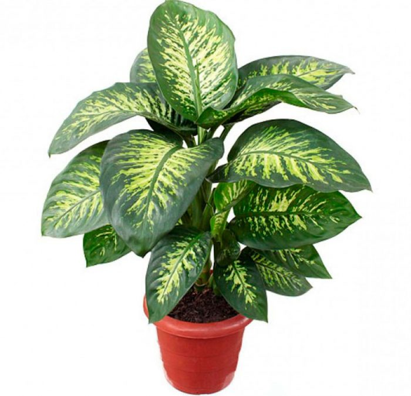
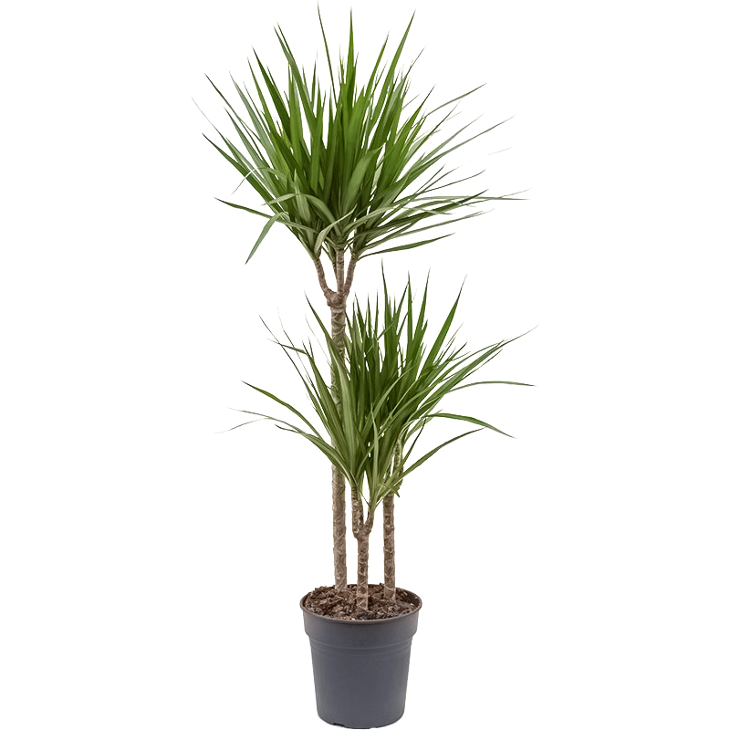
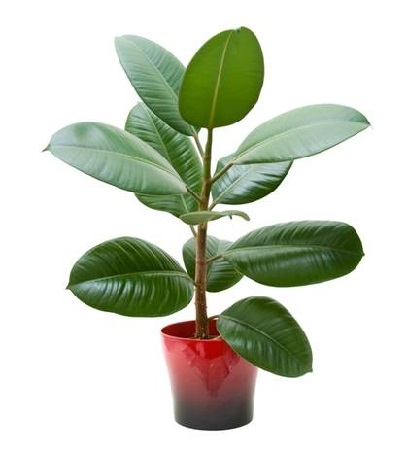
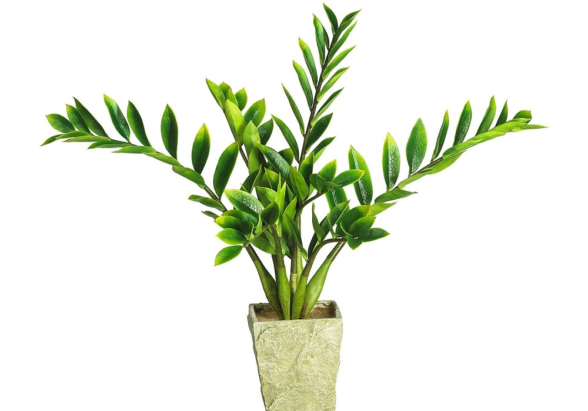
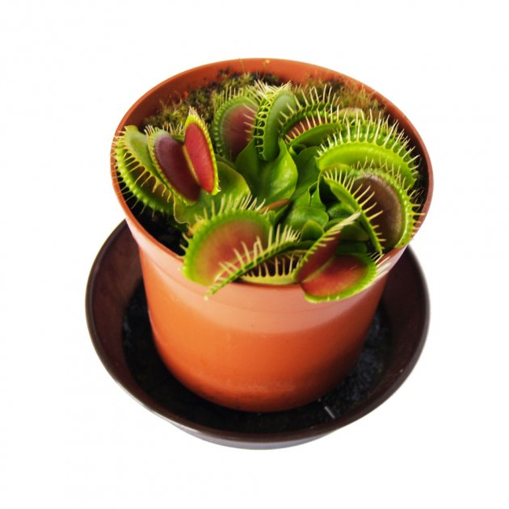
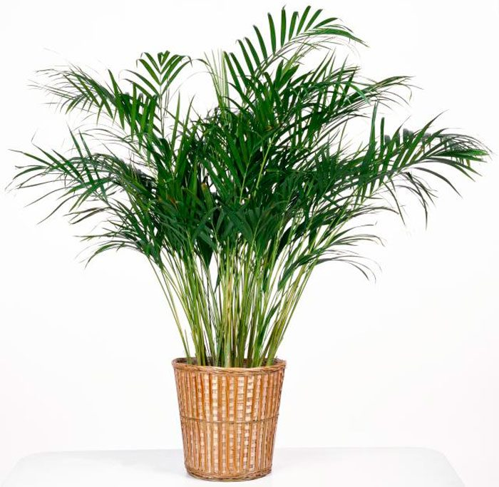

Дифенбахія
Dieffenbachia
— рід вічнозелених рослин родини кліщинцевих, поширених у тропіках
Південної Америки. Налічує від 66 видів

Драцена
Dracaena
— рід рослин родини холодкові, дерева або сукулентні чагарники.
Більшість видів зростає в Африці.

Фікус Еластіка
Ficus elastica
- рослина має повітряні стовпоподібні корені, що спускаються до землі,
перетворюючи дерево на баньян

Заміокулькас Замієлистий
Zamioculcas zamiifolia
— багаторічна рослина. Вид поширений у Східній Африці. Належить до
лікарських і декоративних культур.

Венерина Мухоловка
Dionaea muscipula
— вид хижих рослин з монотипного роду діонея родини росичкові
(Droseraceae).

Пальма Хамедорея
Chamaedorea
або бамбукова пальма — рід квіткових рослин родини Пальмові. Широко
поширених в Південній і Центральній Америці.